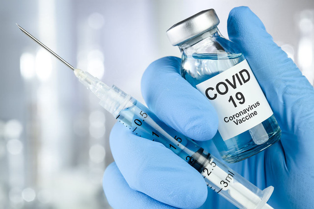

(Thứ tư, 26/05/2021 21:42)
Thay mặt Chính phủ, Thủ tướng Chính phủ Phạm Minh Chính vừa ký ban hành Nghị quyết 53/NQ-CP thông qua chủ trương thành lập Quỹ vaccine phòng COVID-19. Ngay sau đó, Phó Thủ tướng Lê Minh Khái cũng đã ký ban hành Quyết định 779/QĐ-TTg thành lập Quỹ vaccine phòng COVID-19.
Quyết định nêu rõ: Thành lập Quỹ vaccine phòng COVID-19 Việt Nam (Quỹ) để tiếp nhận, quản lý, sử dụng các nguồn tài trợ, hỗ trợ, đóng tự nguyện bằng tiền, vaccine của các tổ chức, cá nhân trong nước và ngoài nước và các nguồn vốn hợp pháp khác cho hoạt động mua, nhập khẩu vaccine, nghiên cứu, sản xuất vaccine trong nước và sử dụng vaccine phòng COVID-19 cho người dân.
Quỹ do Bộ Tài chính quản lý. Tên giao dịch tiếng Anh của Quỹ: Vietnam Fund for Vacination Prevention of Coronavirus Disease 2019 (viết tắt là VFVC).
Quỹ có chức năng quản lý, điều phối các nguồn lực tài chính, hiện vật của Quỹ để tài trợ, hỗ trợ cho hoạt động mua, nhập khẩu vaccine, nghiên cứu, sản xuất vaccine trong nước và sử dụng vaccine phòng COVID-19.
Bộ máy quản lý Quỹ sử dụng cán bộ, công chức của Bộ Tài chính, hoạt động theo chế độ kiêm nhiệm do Bộ trưởng Bộ Tài chính quyết định.
Bộ máy quản lý Quỹ sử dụng cán bộ, công chức của Bộ Tài chính, hoạt động theo chế độ kiêm nhiệm do Bộ trưởng Bộ Tài chính quyết định.
Kinh phí hoạt động của bộ máy quản lý Quỹ do ngân sách nhà nước chi trả, không sử dụng từ nguồn thu của Quỹ.
Quỹ hoạt động không vì mục đích lợi nhuận, sử dụng vốn đúng mục đích và phù hợp với quy định của pháp luật, đảm bảo công khai, minh bạch, tiết kiệm, hiệu quả.
Quỹ chịu sự kiểm tra, thanh tra, kiểm toán về các hoạt động tài chính của Quỹ của các cơ quan quản lý nhà nước về tài chính và Kiểm toán nhà nước; giám sát của Mặt trận Tổ quốc Việt Nam và cộng đồng.
Quỹ được sử dụng vốn nhàn rỗi của Quỹ để gửi tại các ngân hàng thương mại nhằm mục đích bảo toàn và phát triển vốn cho Quỹ nhưng phải đảm bảo an toàn.
Quỹ tiếp nhận các nguồn hỗ trợ, tài trợ cho hoạt động mua, nhập khẩu, sản xuất vaccine
Quỹ tiếp nhận, quản lý, sử dụng các nguồn tài trợ, hỗ trợ, đóng góp tự nguyện bằng tiền, vaccine của các tổ chức, cá nhân trong nước và ngoài nước và các nguồn vốn hợp pháp khác để hỗ trợ, tài trợ cho hoạt động mua, nhập khẩu vaccine, nghiên cứu, sản xuất vaccine trong nước và sử dụng vaccine phòng COVID-19.
Phối hợp với Mặt trận Tổ quốc Việt Nam và các cơ quan, tổ chức liên quan trong việc vận động quyên góp, tài trợ cho Quỹ để hỗ trợ, tài trợ hoạt động mua, nhập khẩu vaccine, nghiên cứu, sản xuất vaccine trong nước và sử dụng vaccine phòng COVID-19 theo quy định.
Nguồn thu của Quỹ bao gồm: Các khoản tài trợ, hỗ trợ, đóng góp tự nguyện bằng tiền, vaccine, các loại hình vật chất khác của các tổ chức, cá nhân trong nước và ngoài nước cho Quỹ; các nguồn vốn hợp pháp khác.
Nhiệm vụ chi của Quỹ là sử dụng để hỗ trợ, tài trợ cho hoạt động mua, nhập khẩu vaccine, nghiên cứu, sản xuất vaccine trong nước và sử dụng vaccine phòng COVID-19.
Bộ Y tế chủ trì, phối hợp với Bộ Tài chính tổng hợp nhu cầu mua, nhập khẩu vaccine, nghiên cứu, sản xuất vaccine trong nước và sử dụng vaccine phòng COVID-19, trình Thủ tướng Chính phủ quyết định chi từ Quỹ để tài trợ, hỗ trợ cho hoạt động mua, nhập khẩu vaccine, nghiên cứu, sản xuất vaccine trong nước và sử dụng vaccine phòng COVID-19 theo quy định.
Bộ Tài chính xuất Quỹ để chi theo nội dung Thủ tướng Chính phủ phê duyệt và căn cứ hồ sơ đề nghị của Bộ Y tế.
Hé lộ bí mật cuộc chuyển nhượng Suarez đến Atletico Madrid, món quà vô giá từ Barcelona
'Vạch trần' showbiz, bà Phương Hằng lập kỷ lục xem livestream cá nhân trên mạng